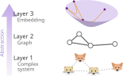
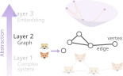
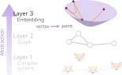
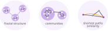
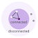
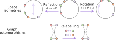

Geometry at the root of complexity
Sentinel North Scientific Meeting
Ariane Lizotte
2023-11-15
Northern complex systems
A complex system is a collection of entities that interact in a structured and elaborate manner and display emergent properties.
Northern research involves a large variety of complex systems such as
- brain networks;
- virus coocurence;
- ecosystems.
Perturbations due to stress propagate over the interaction network, whose structure greatly influences its capacity to recover from them (i.e. resilience).
Abstracting the complex system’s structure

Layer 2: graph
We suppose the behavior of a complex systems is governed by its interactions.
In a graph, the entities are vertices and their interactions are edges.

Layer 3: embedding
We suppose that vertices are points in a metric space. The positions form the embedding of the graph.
Edges are black and shortest paths (geodesics) are orange.

Shortest paths in metric spaces of constant curvature
The shortest path between two points is curved except in the flat space.

Spherical
Positive curvature
Hyperbolic
Negative curvature
Hyperbolic geometry is ideal
We use the hyperbolic geometry because it naturally reproduces important structural properties observed in real complex system such as
- the fractal structure of many networks;
- the communities in the graph;
- the shortest paths.

Probabilistic graph from the embedding
The embedding can be used to generate new graphs.
An edge exists with probability \[\begin{align}
\mathbb{P}[(i, j) \text{ is an edge}] = \frac{1}{1+e^{\beta(d(x_i, x_j) - R)}},
\end{align}\] where \(x_i\) is vertex \(i\)’s position, \(d\) is the distance and \(R\) is the maximum radius.
Embedding is optimization
The embedding should generate the original graph with high probability, meaning that
- if \((i,j)\) is an edge, \(d(x_i, x_j)\) is small
- otherwise, \(d(x_i, x_j)\) is large.

My project aims to find the embeddings which best respect those constraints.
Embedding of the world airport network1


Current algorithms yield a single embedding. We ignore the margins of error and if there exists other good embeddings.
Preliminary results

Some challenges of this optimization
There are many symmetries due to the graph and the metric space structure.

Application to brain development
Pierre Marquet’s team is imaging1 neuron cultures with neurological disorders during their development.

We will analyse the evolution of the embedding of those brain networks in the hope of identifying a geometric signature for the neurological disorders.
Takeaways
- The resilience of a complex system is related its interaction structure.
- The interaction structure can be represented as a graph.
- Geometric model: connected vertices are close and disconnected vertices are far.
- The embedding of the graph are the coordinates which best satisfy those conditions.
- Identify the geometric signature of neurological disorders in brain networks.